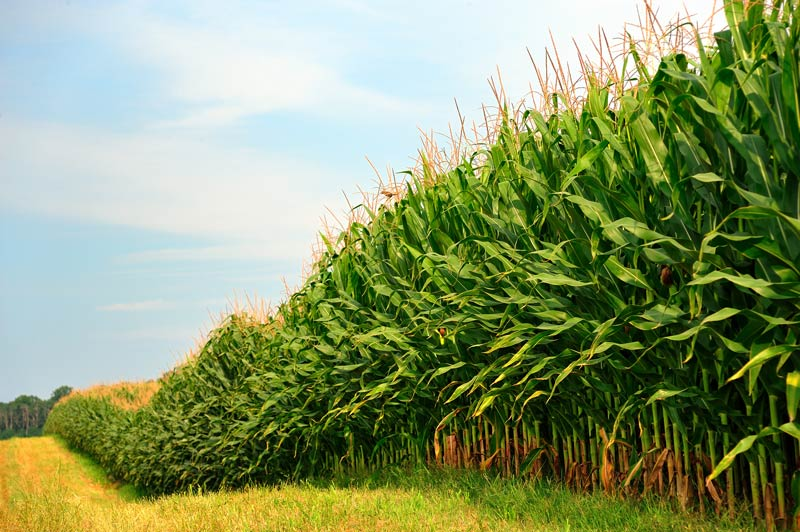
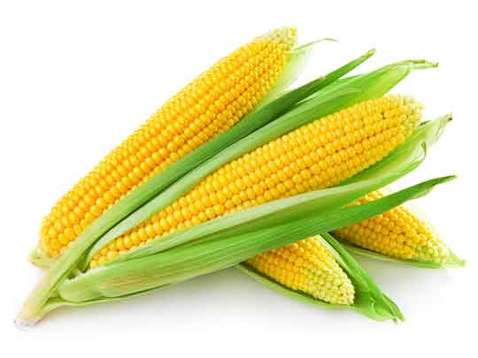

Kenya Agricultural Products Association (KAPA)
KAPA is an organisation that promotes agriculture, its products and all activities associated with agriculture.
KAPA has a variety of agricultural products that it supports ranging from; Cash crops, Vegetables, Cereals, Fibre crops, Roots and Tubers, Fruits to Livestock.
Some of the products are indicated below:
Vegetables - Carrot
Carrots in KAPA are the best, since they are grown in favouarble weather conditions in a portion of a major farm that KAPA owns.
Carrots are scientifiaclly proven to be good for your eyes since they enhance your eyesight. It is one of the most selling KAPA product in the market.

Check out more on Products
Fruits
Fruits are important components to leading and having a healthy life. A diet that includes fruits is a healthy diet and is always recommended by our health specialists.
Fruits are the common products that KAPA oftenly produce. A half of the many portions of land owned by Kenya Agricultural Product Association is occupied by a variety of fruits.
Check out more on Products
Cereals
KAPA has broaden its agricultural operations and set for production of cereal products such as; maize, rice and wheat. Production of cereals has led to the growth of the organistion over the past few years whereby the company experienced a 48% increase in profit on cereal products(maize, rice and wheat) over the past few years.
Maize
Maize is the most selling cereal product in the market due to its high demand in Kenya and other African nations. Its demand arises every now and then due to the production of maize flour which is loved Kenyans and other African Nations.KAPA however, has got a large parcel of land planted maize crop.
KAPA initially invested a lot for this product in conducting research on the best mesthods of production. Researches were made to ensure better maize corn production through prevention of pests that eat up the maize corns even before maturity thus having bad quality maize corn production.
Good product maize corn are best for the production of maize flour which is an important component in the market industry cereals. Over the past years or rather, in our history, maize corn and flour product have been a basic human need in our diet(It's a "can't do with" kind of a product). KAPA has put more effort and investment in this particular type of product.
This is just a brief information on the product please check out more on Products.